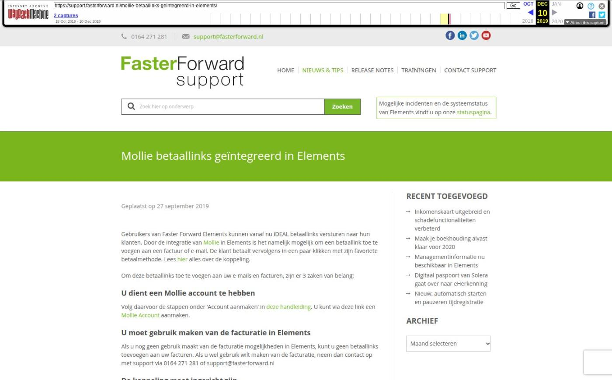

Inlogscherm en F-icoon vernieuwd

Tekstinhoud
Geplaatst op 10 september 2019
Inlogscherm
F-icoon
Inlogscherm vernieuwd
Om de informatie richting Elements-gebruikers te verbeteren, is de weergave van de nieuwsberichten aangepast. De indeling is nu als volgt:
Nieuwsberichten
Uiterst links staan de nieuwsberichten van fasterforward.nl. Deze categorie toont onder andere:
Interviews
Blogs
Nieuwe koppelingen
Tips en releases
In het midden staan tips en releasenieuws van support.fasterforward.nl. Deze categorie toont onder andere:
Tips & Tricks
Releases
Updates van Elements
Handige links
Onderaan de pagina staan drie links:
Statuspagina: hier staat de actuele status van Elements;
Supportwebsite: hier staan alle handleidingen en instructievideo’s;
Algemene website: hier staat meer informatie over Faster Forward, onze tarieven en de mogelijkheden van Elements.
F-icoon vernieuwd
Het vertrouwde ‘F-icoon’ van Faster Forward is ook vernieuwd. Deze is terug te vinden in het tabblad van de browser en op het Elements dashboard.
Uiterlijk nieuw F-icoon
Let op: op de Faster Forward On-Route app is het ‘F-icoon’ nog niet geüpdatet.
Categorie: Algemeen, Release